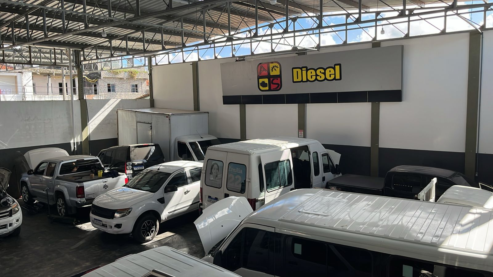
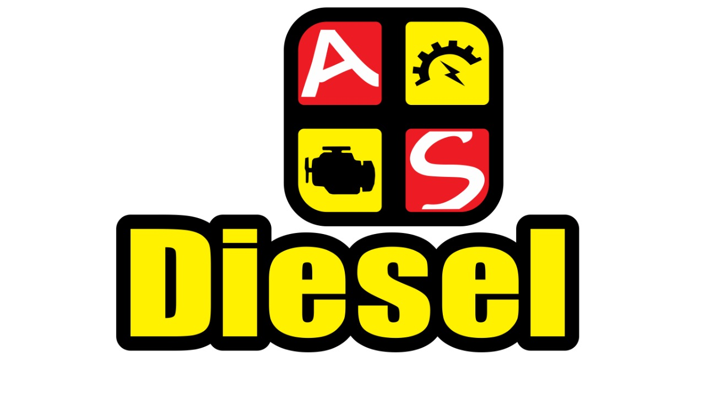
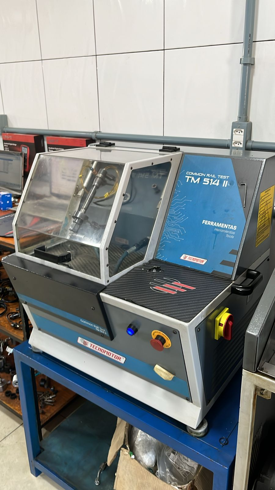
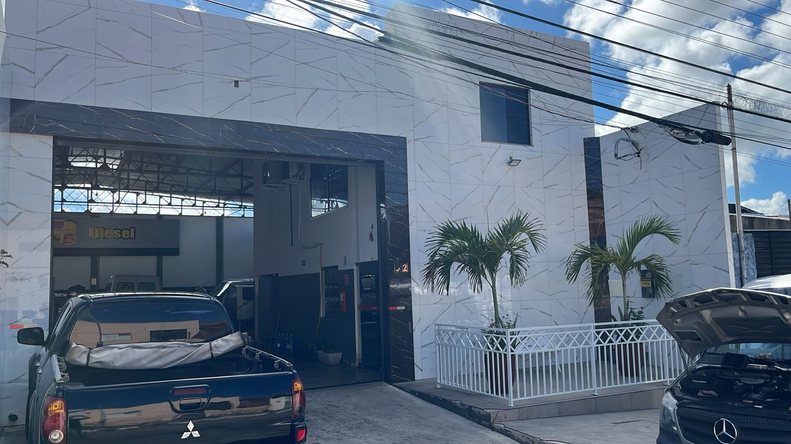
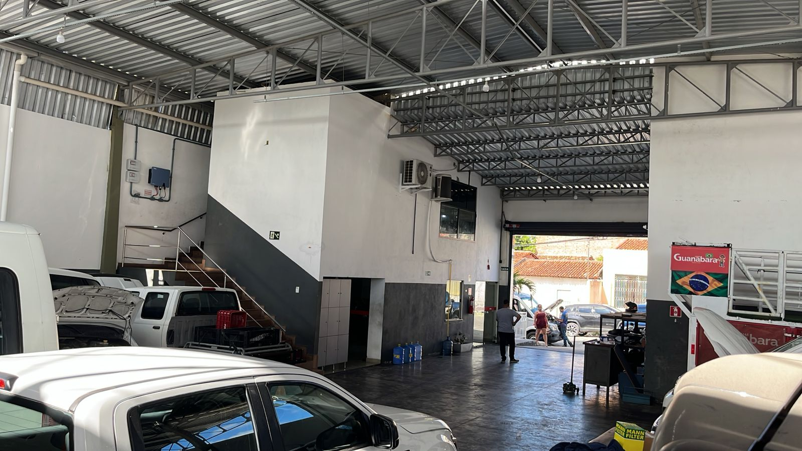
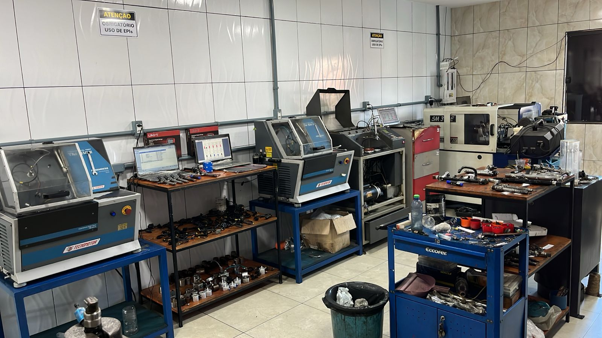
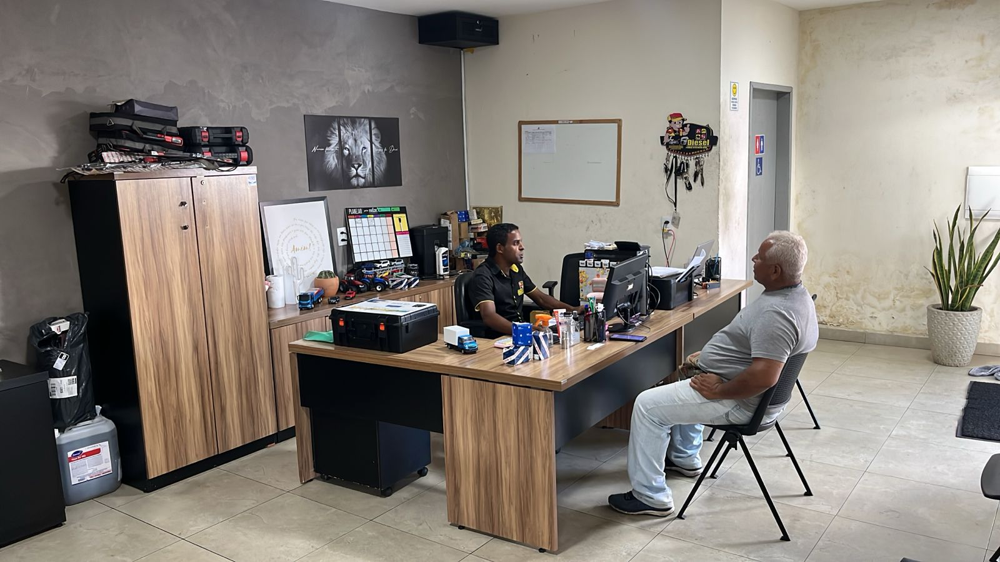
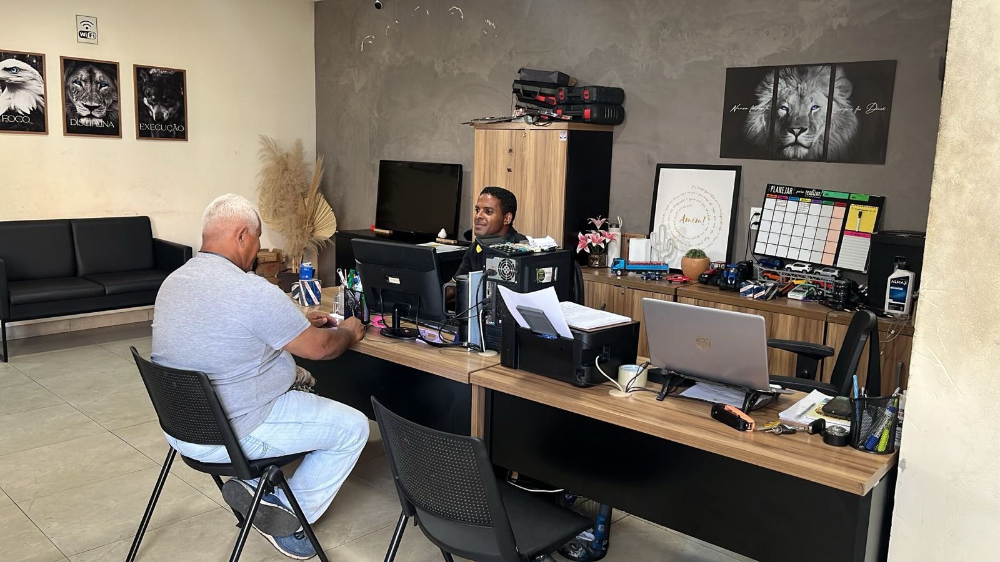
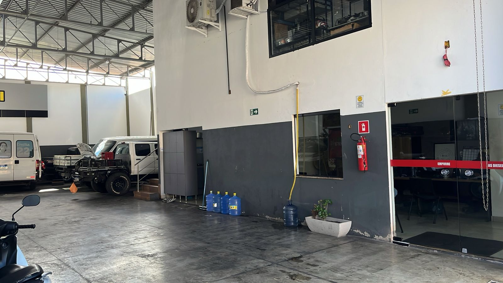

Oficina diesel para capital, cidades vizinhas e interior de Sergipe.
Bombas, bicos, ARLA 32 e elétrica diesel
Reparo técnico para sistemas diesel que não podem parar.
A AS Diesel atende Aracaju, cidades vizinhas e todo o estado com reparação de bombas e bicos injetores, sistema ARLA 32, elétrica diesel, injeção eletrônica e diagnóstico para utilitários, vans, caminhonetes e frotas.
7:30-12h e 13:30-18h para atendimento técnico e comercial.
Pátio, recepção, bancada e diagnóstico para rotina diesel pesada.



Bancada de teste
Equipamentos para diagnóstico e regulagem de injeção diesel.

Unidade em Novo Paraíso
Rua Canadá, 283, com acesso fácil para Aracaju e cidades vizinhas.
Linha de serviço
Diagnóstico diesel com foco nos sistemas que mais pesam no desempenho do veículo.
Se o problema está em pressão, alimentação, elétrica ou pós-tratamento, a AS Diesel concentra o atendimento nos conjuntos que exigem precisão, rotina de bancada e leitura técnica.
Linha 01
Reparação de bombas e bicos injetores
Atendimento voltado para componentes que pedem desmontagem técnica, teste, regulagem e resposta confiável para o veículo voltar a trabalhar com força e estabilidade.
- Serviço direcionado para utilitários, vans, pickups e frotas diesel.
- Diagnóstico com apoio de bancada e rotina prática de oficina.
- Foco em desempenho, retomada e funcionamento regular do conjunto.
Oficina real
Estrutura ampla, recepção ativa e rotina de bancada para atendimento diesel em Aracaju.
A AS Diesel reúne pátio coberto, área de testes, recepção presencial e ambientes de apoio para manter o atendimento técnico organizado do diagnóstico à liberação do veículo.




Por que escolher a AS Diesel
Uma oficina que combina pátio, bancada e atendimento direto para demanda diesel.
O diferencial está na soma entre espaço operacional, foco técnico e resposta rápida para quem depende do veículo para rodar, entregar ou trabalhar.
Especialização diesel
Serviços voltados para reparação de componentes críticos do sistema diesel.
Estrutura de bancada
Ambiente preparado para teste, análise e regulagem com foco em precisão.
Atendimento regional
Base em Aracaju com alcance para cidades vizinhas e clientes de todo Sergipe.
Recepção e suporte
Contato direto para orçamento, orientação inicial e encaminhamento do serviço.
Galeria da unidade
Fachada, pátio, recepção, bancadas e rotina real de uma oficina diesel em operação.
Passe pelas imagens da unidade e veja o ambiente onde a AS Diesel recebe veículos, executa diagnósticos e mantém a operação organizada no dia a dia.


Área de atendimento
Base em Aracaju para atender demanda diesel da capital, cidades vizinhas e todo o estado.
Quem procura oficina mecânica diesel em Aracaju, serviços de bicos injetores, bombas injetoras, bomba de alta pressão, ARLA 32 ou suporte em injeção eletrônica encontra na AS Diesel uma operação focada nesse tipo de demanda.
- Oficina diesel em Aracaju com atendimento presencial.
- Suporte para clientes de cidades vizinhas e rotas regionais.
- Atendimento para todo o estado de Sergipe conforme a necessidade do veículo.
Atendimento e apoio
Recepção, apoio interno e acessibilidade para uma experiência de atendimento mais organizada.
Organização interna
Espaços de apoio que acompanham a rotina da oficina.
Apoio operacional
Ambiente de suporte para manter o fluxo da equipe no dia a dia.
Acessibilidade
Unidade com estrutura acessível para atendimento presencial.
Reparação de bombas e bicos injetores, sistema ARLA 32, elétrica diesel, injeção eletrônica e diagnóstico complementar para linhas diesel.
Utilitários, vans, caminhonetes e outros veículos diesel que precisam de atendimento técnico em componentes de alimentação, elétrica e pós-tratamento.
O atendimento acontece de segunda a sexta, das 7:30 às 12h e das 13:30 às 18h. Sábado e domingo a unidade permanece fechada.
Envie pelo WhatsApp o modelo do veículo, o sintoma percebido e, se possível, fotos ou detalhes do serviço procurado. Isso ajuda a equipe a direcionar o atendimento com mais rapidez.
Contato direto
Fale com a AS Diesel e coloque seu atendimento em movimento.
Use WhatsApp, telefone, Instagram ou e-mail para enviar sua demanda e alinhar o melhor caminho para o serviço que o seu veículo precisa.